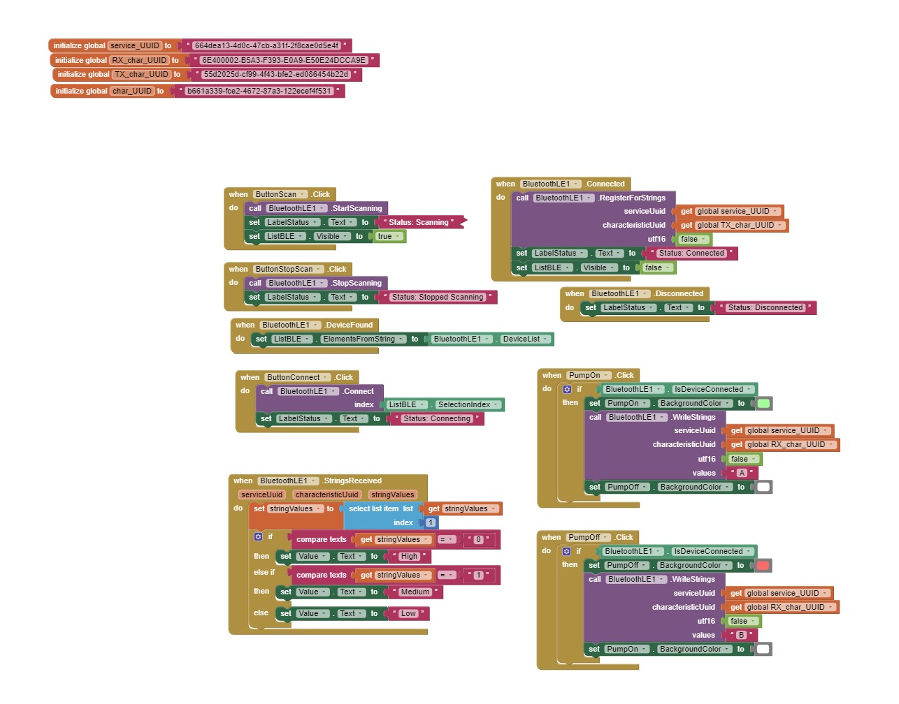

Week 12: Project Prep (MVP)
<br>
<b> Overall project scope </b>
INCLUDE SCHEMATIC
<u> Water filter </u>
INCLUDE AMAZON PHOTO
<div class = "center">
<img src="../12/amazon.jpg"
width ="200" height="500"/>
</div>
INCLUDE CAD DRAWINGS
<div class = "center">
<img src="../12/fusion.png"
width ="600" height="400"/>
</div>
<iframe src="https://college418.autodesk360.com/shares/public/SH9285eQTcf875d3c539c97339a88419e3ed?mode=embed" width="640" height="480" allowfullscreen="true" webkitallowfullscreen="true" mozallowfullscreen="true" frameborder="0"></iframe>
prototype 1 photo
<div class = "center">
<img src="../12/prototype.jpg"
width ="600" height="400"/>
</div>
<div class = "center">
<img src="../12/ptototype1.2.jpg"
width ="600" height="400"/>
</div>
prototype 2 photos
<div class = "center">
<img src="../12/ptototype2.jpg"
width ="600" height="400"/>
</div>
<u>Bluetooth App feature</u>
WEBSITE CODE
WEBSITE ERROR SCREENSHOT
<div class = "center">

</div>
Arduino code - check that comments are updated
<pre><code>
#include <BLEDevice.h>
#include <BLE2902.h>
#include <BLEServer.h>
#include <BLEUtils.h>
//Change for motor and sensor
//intervals for pump motor - change to appropriate ESP32 ones
const int A1A = 21; // define pin 3 for A-1A (PWM Speed)
const int A1B = 22;
//intervals for sensor
int read_high;
int read_low;
int diff;
// Change to appropriate pin on arduino
int result; //variable for the result of the tx_rx measurement.
int analog_pin = 32;
int tx_pin = 33;
int deviceConnected;
int txValue;
BLECharacteristic *pCharacteristic;
//CHANGE UUID AFTER
#define SERVICE_UUID "6E400001-B5A3-F393-E0A9-E50E24DCCA9E" // UART service UUID
#define CHARACTERISTIC_UUID "b661a339-fce2-4672-87a3-122ecef4f531" //randomly generated
#define CHARACTERISTIC_UUID_RX "6E400002-B5A3-F393-E0A9-E50E24DCCA9E"
#define CHARACTERISTIC_UUID_TX "6E400003-B5A3-F393-E0A9-E50E24DCCA9E"
class MyCallbacks: public BLECharacteristicCallbacks{
void onWrite(BLECharacteristic *pCharacteristic) {
std::string rxValue = pCharacteristic->getValue();
if (rxValue.length() > 0) {
Serial.println("*********");
Serial.print("Received Value: ");
for (int i = 0; i < rxValue.length(); i++) {
Serial.print(rxValue[i]);
}
Serial.println(); // Do stuff based on the command received from the app
//TURN PUMP on and off based off button
if (rxValue.find("A") != -1) {
Serial.print("Turning ON!");
digitalWrite(A1A, HIGH);
digitalWrite(A1B, LOW);
}
else if (rxValue.find("B") != -1) {
Serial.print("Turning OFF!");
digitalWrite(A1A, LOW);
digitalWrite(A1B, LOW);
}
Serial.println();
Serial.println("*********");
}
}
};
void setup() {
pinMode(tx_pin, OUTPUT); // Pin 4 provides the voltage step
Serial.begin(115200);
Serial.println("Starting BLE work!");
BLEDevice::init("LaylaESP32");
BLEServer *pServer = BLEDevice::createServer();
BLEService *pService = pServer->createService(SERVICE_UUID);
// Create a BLE Characteristic
pCharacteristic = pService->createCharacteristic(
CHARACTERISTIC_UUID_RX,
BLECharacteristic::PROPERTY_WRITE
);
pCharacteristic = pService->createCharacteristic(
CHARACTERISTIC_UUID_TX,
BLECharacteristic::PROPERTY_NOTIFY
);
pCharacteristic->addDescriptor(new BLE2902());
pCharacteristic->setCallbacks(new MyCallbacks());
pService->start();
// BLEAdvertising *pAdvertising = pServer->getAdvertising(); // this still is working for backward compatibility
// Start advertising
pServer->getAdvertising()->start();
Serial.println("Waiting a client connection to notify...");
//IF phone sense information
class MyServerCallbacks: public BLEServerCallbacks {
void onConnect(BLEServer* pServer) {
deviceConnected = true;
};
void onDisconnect(BLEServer* pServer) {
deviceConnected = false;
}
};
}
void loop() {
digitalWrite(tx_pin,HIGH); // Step the voltage high on conductor 1.
read_high = analogRead(analog_pin); // Measure response of conductor 2.
delayMicroseconds(100); // Delay to reach steady state.
digitalWrite(tx_pin,LOW); // Step the voltage to zero on conductor 1.
read_low = analogRead(analog_pin); // Measure response of conductor 2.
diff = read_high - read_low; // desired answer is the difference between high and low.
result = ((diff-857)/1.1);
Serial.print("Result: ");
Serial.println(result);
delay(1000);
if (deviceConnected) {
// PUT CAPCITOR SENSOR LEVEL IN HERE plus conversion
txValue = result ; // This could be an actual sensor reading!
// Let's convert the value to a char array:
char txString[8]; // make sure this is big enuffz
dtostrf(txValue, 1, 2, txString); // float_val, min_width, digits_after_decimal, char_buffer
//
// pCharacteristic->setValue(&txValue, 1); // To send the integer value
// pCharacteristic->setValue("Hello!"); // Sending a test message
pCharacteristic->setValue(txString);
pCharacteristic->notify(); // Send the value to the app!
// Serial.print("*** Sent Value: ");
// Serial.print(txString);
// Serial.println(" ***");
}
delay(1000);
}
</code></pre>
<u>Backup plan </u>
ESP 32 ONE WAY CONNECTION
Button and screen one end (mimicking app)
Pump and water level sensor on other
Circuit drawing
Here is the code
Code 1 - for button and screen
<pre><code>
#include <esp_now.h>
#include <WiFi.h>
#include <Wire.h>
#include <Adafruit_GFX.h>
#include <Adafruit_SSD1306.h>
#define SCREEN_WIDTH 128 // OLED display width, in pixels
#define SCREEN_HEIGHT 64 // OLED display height, in pixels
// Declaration for an SSD1306 display connected to I2C (SDA, SCL pins)
Adafruit_SSD1306 display(SCREEN_WIDTH, SCREEN_HEIGHT, &Wire, -1);
#//Bellow I define the pins I will use for the RGB LED and the Buttons
//intervals for sensor
int read_high;
int read_low;
int diff;
// Change to appropriate pin on arduino
int result; //variable for the result of the tx_rx measurement.
int analog_pin = 32;
int tx_pin = 33;
int txValue;
const int A1A = 21; // define pin 3 for A-1A (PWM Speed)
const int A1B = 22;
// REPLACE WITH THE MAC Address of your receiver
uint8_t broadcastAddress[] = {0xFF, 0xFF, 0xFF, 0xFF, 0xFF, 0xFF};
// I initiate the "last" and "current" states of the three buttons, with the last always being LOW at the beggining of the program
int lastState1 = LOW;
int currentState1;
// Define variables to store BME280 readings to be sent
float waterlevel;
// Define variables to store incoming readings
bool button;
// Variable to store if sending data was successful
String success;
//Structure example to send data
//Must match the receiver structure
typedef struct struct_message {
float waterlevel;
bool button;
} struct_message;
// Create a struct_message called BME280Readings to hold sensor readings
struct_message sensorReadings;
// Create a struct_message to hold incoming sensor readings
struct_message incomingReadings;
esp_now_peer_info_t peerInfo;
// Callback when data is sent
void OnDataSent(const uint8_t *mac_addr, esp_now_send_status_t status) {
Serial.print("\r\nLast Packet Send Status:\t");
Serial.println(status == ESP_NOW_SEND_SUCCESS ? "Delivery Success" : "Delivery Fail");
if (status ==0){
success = "Delivery Success :)";
}
else{
success = "Delivery Fail :(";
}
}
// Callback when data is received
void OnDataRecv(const uint8_t * mac, const uint8_t *incomingData, int len) {
memcpy(&incomingReadings, incomingData, sizeof(incomingReadings));
Serial.print("Bytes received: ");
Serial.println(len);
waterlevel = incomingReadings.button;
}
void setup() {
// Init Serial Monitor
Serial.begin(115200);
// Set device as a Wi-Fi Station
WiFi.mode(WIFI_STA);
// Init ESP-NOW
if (esp_now_init() != ESP_OK) {
Serial.println("Error initializing ESP-NOW");
return;
// initialize serial communication at 115200 bits per second:
Serial.begin(115200);
}
// Once ESPNow is successfully Init, we will register for Send CB to
// get the status of Trasnmitted packet
esp_now_register_send_cb(OnDataSent);
// Register peer
memcpy(peerInfo.peer_addr, broadcastAddress, 6);
peerInfo.channel = 0;
peerInfo.encrypt = false;
// Add peer
if (esp_now_add_peer(&peerInfo) != ESP_OK){
Serial.println("Failed to add peer");
return;
}
// Register for a callback function that will be called when data is received
esp_now_register_recv_cb(OnDataRecv);
}
void loop() {
// read the state of all the buttons
//The if statement only acts when the button is released, not pressed - specifically for button 1
// Send the water level via ESP-NOW
esp_err_t result = esp_now_send(broadcastAddress, (uint8_t *) &sensorReadings, sizeof(sensorReadings));
if (button == 1) {
digitalWrite(A1A, HIGH); //Switch pump on
digitalWrite(A1B, LOW);
delay(10); //Wait 1 Second
}
else if (button ==0 ) {
digitalWrite(A1A, HIGH); //Switch pump ofF
digitalWrite(A1B, LOW);
delay(10); //Wait 1 Second
}
if (result == ESP_OK) {
Serial.println("Sent with success");
}
else {
Serial.println("Error sending the data");
}
digitalWrite(tx_pin,HIGH); // Step the voltage high on conductor 1.
read_high = analogRead(analog_pin); // Measure response of conductor 2.
delayMicroseconds(100); // Delay to reach steady state.
digitalWrite(tx_pin,LOW); // Step the voltage to zero on conductor 1.
read_low = analogRead(analog_pin); // Measure response of conductor 2.
diff = read_high - read_low; // desired answer is the difference between high and low.
waterlevel = ((diff-857)/1.1);
Serial.print("Result: ");
Serial.println(waterlevel);
delay(1000);
Serial.println();
}
</code></pre>
Code 2 - for water system
Still going to try to get app to work - ideal
#include <esp_now.h>
#include <WiFi.h>
#include <Wire.h>
#include <Adafruit_GFX.h>
#include <Adafruit_SSD1306.h>
#define SCREEN_WIDTH 128 // OLED display width, in pixels
#define SCREEN_HEIGHT 64 // OLED display height, in pixels
// Declaration for an SSD1306 display connected to I2C (SDA, SCL pins)
Adafruit_SSD1306 display(SCREEN_WIDTH, SCREEN_HEIGHT, &Wire, -1);
#//Bellow I define the pins I will use for the RGB LED and the Buttons
#define BUTTON_PIN_1 21 // GIOP21 pin connected to button
#define PIN_BLUE 5 // GIOP21
//intervals for sensor
int read_high;
int read_low;
int diff;
// Change to appropriate pin on arduino
int result; //variable for the result of the tx_rx measurement.
int analog_pin = 32;
int tx_pin = 33;
int txValue;
int Button1;
// REPLACE WITH THE MAC Address of your receiver
uint8_t broadcastAddress[] = {0xFF, 0xFF, 0xFF, 0xFF, 0xFF, 0xFF};
// I initiate the "last" and "current" states of the three buttons, with the last always being LOW at the beggining of the program
int lastState1 = LOW;
int currentState1;
// Define variables to store BME280 readings to be sent
bool button;
// Define variables to store incoming readings
float waterlevel;
// Variable to store if sending data was successful
String success;
//Structure example to send data
//Must match the receiver structure
typedef struct struct_message {
float waterlevel;
bool button;
} struct_message;
// Create a struct_message called BME280Readings to hold sensor readings
struct_message ButtonReadings;
// Create a struct_message to hold incoming sensor readings
struct_message incomingReadings;
esp_now_peer_info_t peerInfo;
// Callback when data is sent
void OnDataSent(const uint8_t *mac_addr, esp_now_send_status_t status) {
Serial.print("\r\nLast Packet Send Status:\t");
Serial.println(status == ESP_NOW_SEND_SUCCESS ? "Delivery Success" : "Delivery Fail");
if (status ==0){
success = "Delivery Success :)";
}
else{
success = "Delivery Fail :(";
}
}
// Callback when data is received
void OnDataRecv(const uint8_t * mac, const uint8_t *incomingData, int len) {
memcpy(&incomingReadings, incomingData, sizeof(incomingReadings));
Serial.print("Bytes received: ");
Serial.println(len);
waterlevel = incomingReadings.waterlevel;
}
void setup() {
// Init Serial Monitor
Serial.begin(115200);
// Set device as a Wi-Fi Station
WiFi.mode(WIFI_STA);
// Init ESP-NOW
if (esp_now_init() != ESP_OK) {
Serial.println("Error initializing ESP-NOW");
return;
// initialize serial communication at 115200 bits per second:
Serial.begin(115200);
//I initiate the Button pins as inputs with internal PULLUP resistors
pinMode(BUTTON_PIN_1, INPUT_PULLUP);
pinMode(PIN_BLUE, OUTPUT);
// Set device as a Wi-Fi Station
WiFi.mode(WIFI_STA);
// Init ESP-NOW
if (esp_now_init() != ESP_OK) {
Serial.println("Error initializing ESP-NOW");
return;
}
// Once ESPNow is successfully Init, we will register for Send CB to
// get the status of Trasnmitted packet
esp_now_register_send_cb(OnDataSent);
// Register peer
memcpy(peerInfo.peer_addr, broadcastAddress, 6);
peerInfo.channel = 0;
peerInfo.encrypt = false;
// Add peer
if (esp_now_add_peer(&peerInfo) != ESP_OK){
Serial.println("Failed to add peer");
return;
}
// Register for a callback function that will be called when data is received
esp_now_register_recv_cb(OnDataRecv);
}
}
void loop() {
// read the state of all the buttons
//The if statement only acts when the button is released, not pressed - specifically for button 1
if(lastState1 == HIGH && currentState1 == LOW){
Serial.println("The button 1 was pressed"); //For debugging - I print the button that was pressed
//RGB LED goes blue because a button was pressed
analogWrite(PIN_BLUE, 255);
ButtonReadings.button = true; // The data we will send will be "false" - which opens the solenoid
}
else{ButtonReadings.button = false; // If the variable is even, it sends "true" - which locks the solenoid
analogWrite(PIN_BLUE, 0); //Then it stops}
// Send the boolean via ESP-NOW
esp_err_t result = esp_now_send(broadcastAddress, (uint8_t *) &ButtonReadings, sizeof(ButtonReadings));
if (result == ESP_OK) {
Serial.println("Sent with success");
}
else {
Serial.println("Error sending the data");
}
display.display();
delay(10000);
display.clearDisplay();
}
// Display Readings on OLED Display
display.clearDisplay();
display.setTextSize(1);
display.setTextColor(WHITE);
display.setCursor(0, 0);
display.println("INCOMING READINGS");
display.setCursor(0, 15);
display.print("Water level: ");
display.print(incomingReadings.waterlevel);
display.cp437(true);
display.print("mL");
display.print(success);
display.display();
// Display Readings in Serial Monitor
Serial.println("INCOMING READINGS");
Serial.print("Water level: ");
Serial.print(incomingReadings.waterlevel);
Serial.println(" mL");
Serial.println();
}
</code></pre>